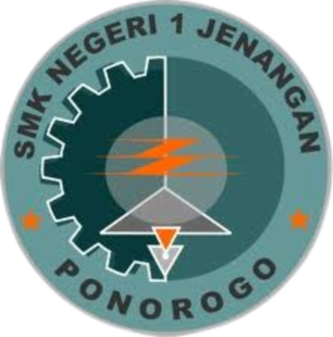
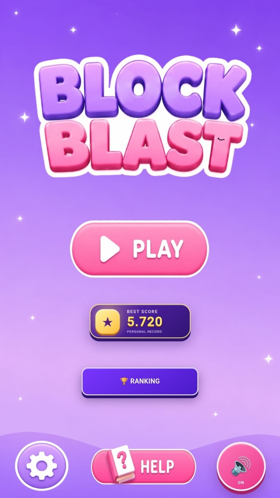
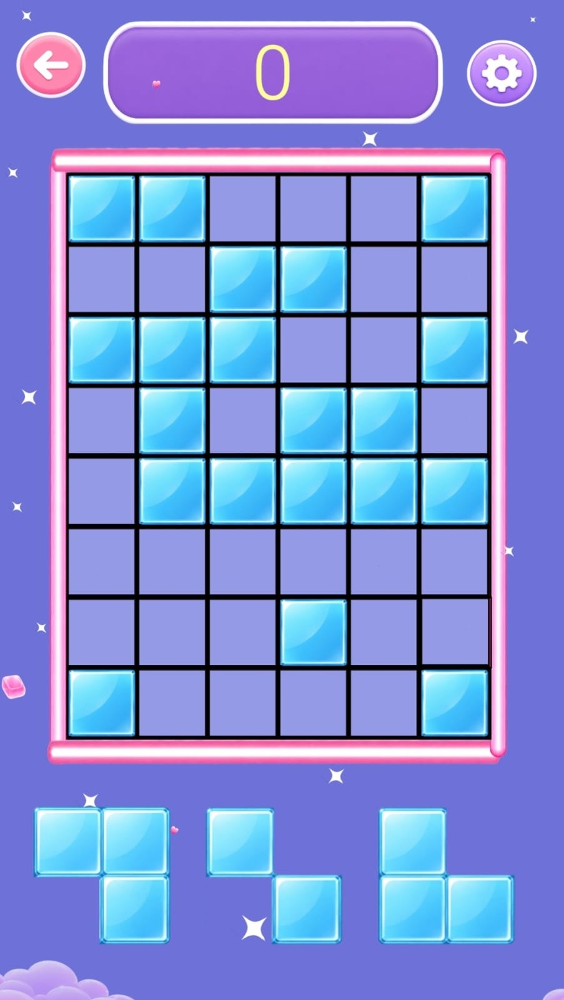
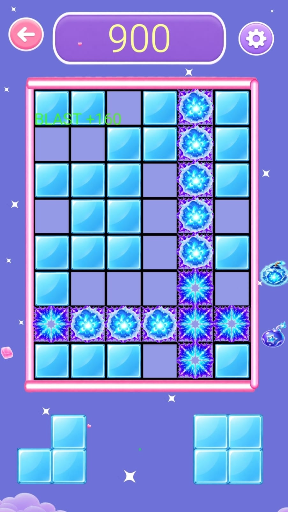
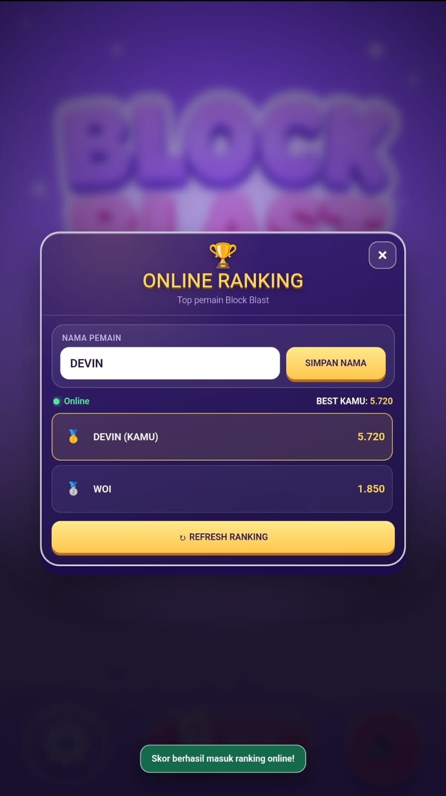

Halo, saya
Devin Al-Fakhry
Afrillano.
Siswa Rekayasa Perangkat Lunak di SMK Negeri 1 Jenangan yang tertarik pada pemrograman, pengembangan web, aplikasi, dan game development.


Belajar teknologi untuk
menciptakan sesuatu yang berguna.
Saya adalah siswa SMK Negeri 1 Jenangan jurusan Rekayasa Perangkat Lunak. Saya memiliki ketertarikan dalam pengembangan perangkat lunak, pemrograman, dan teknologi informasi.
Saya berkomitmen untuk terus belajar, meningkatkan keterampilan, serta siap berkontribusi secara positif di lingkungan kerja profesional.
Perjalanan
pendidikan saya.
SMK Negeri 1 Jenangan
Jurusan Rekayasa Perangkat Lunak
SMPN 1 Mlarak
Ponorogo, Jawa Timur
SDN 1 Gandu
Ponorogo, Jawa Timur
Keahlian teknis &
kemampuan pendukung.
Kompetensi yang sedang saya kembangkan melalui pembelajaran sekolah, proyek, dan praktik kerja lapangan.
Pemrograman & Web
Aplikasi & Tools
Analisis & Soft Skills
Bahasa
- Bahasa IndonesiaAktif
- Bahasa JawaAktif
- Bahasa InggrisDasar
Pengalaman belajar,
PKL, dan proyek yang saya kerjakan.
Bagian ini merangkum pengalaman dan proyek utama yang saya kerjakan selama belajar Rekayasa Perangkat Lunak, praktik kerja lapangan, serta latihan pengembangan sistem.
Pembuatan Game Block Blast menggunakan Construct 3
Proyek utama selama PKL berupa game puzzle berbasis grid. Saya mengerjakan tampilan game, mekanisme penempatan block, sistem skor, serta beberapa fitur pendukung.
- Membuat game puzzle berbasis grid menggunakan Construct 3.
- Menerapkan sistem grid, drag and drop, deteksi baris/kolom penuh, skor, best score, dan game over.
- Mendesain tampilan game, objek, menu utama, serta logika pada event sheet.
- Membuat sistem placement block, spawner, item bom, pengaturan suara, dan menu bantuan.




Proyek Aplikasi Digital & Website Produk
Latihan pengembangan aplikasi dan website produk sebagai bagian dari pembelajaran Rekayasa Perangkat Lunak.
- Berlatih membuat aplikasi dan website produk sederhana.
- Mengenal proses pembuatan antarmuka pengguna yang rapi dan mudah digunakan.
- Mempelajari dasar pengembangan sistem dan pengelolaan struktur project.
Sistem Informasi Presensi Siswa
Proyek pembelajaran untuk memahami bagaimana sebuah sistem presensi dirancang dari kebutuhan pengguna hingga penyimpanan data.
- Mempelajari perancangan sistem presensi siswa.
- Mengenal dasar basis data dan pengolahan informasi.
- Mempelajari analisis kebutuhan sistem sebelum proses pengembangan.
Rumah Rajut — Website Usaha Dinamis
Website usaha produk kerajinan rajut yang dibuat sebagai mini project Junior Web Developer. Website terhubung langsung dari portofolio ini.
- Menampilkan katalog produk dari database MySQL.
- Menyediakan pencarian, filter kategori, detail produk, dan pemesanan melalui WhatsApp.
- Membuat halaman admin CRUD untuk tambah, edit, dan hapus data produk.